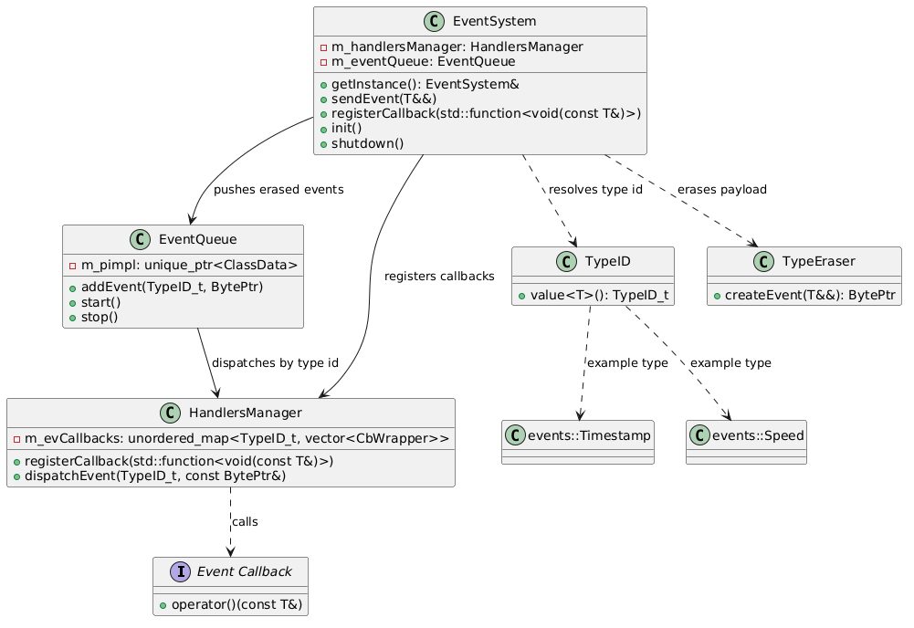
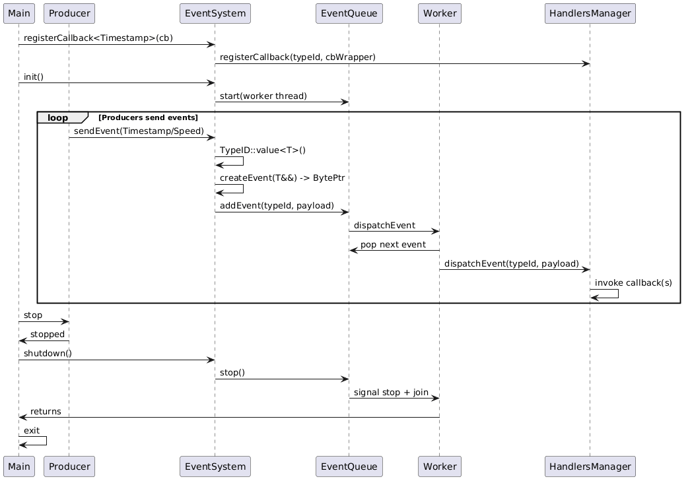

Dynamic Event System
This module explores a runtime-typed event system with type erasure, asynchronous queue dispatch, and callback registration by event type.
Overview
Current flow:
1. Producer calls EventSystem::sendEvent
2. Event type is mapped to a runtime TypeID
3. Payload is type-erased into byte array
4. Event is enqueued in EventQueue
5. Worker thread dispatches to HandlersManager
6. All registered callbacks for that type are invoked
Architecture
Class Diagram

Sequence Diagram

Positive Sides
- Runtime extensibility: New event types can be introduced without changing a central variant/union.
- Decoupled architecture: Producers, queue, and handlers are separated by clear responsibilities.
- Asynchronous dispatch: Event production is decoupled from callback execution via worker thread and queue.
- Move-aware send path:
sendEvent(T&&)with forwarding supports efficient event transfer. - Deterministic lifecycle hooks:
init()andshutdown()make startup/shutdown explicit.
Current Limitations / Negative Points
- Duplicate callback auto-detection is not reliable: Callback identity cannot be inferred robustly from generic
std::function(especially lambdas with captures). - No full unregister flow yet: Registration token/id and stable removal path are still TODO.
- Startup registration overhead: On each process start, callbacks must be registered at runtime before events can be fully dispatched; this adds startup work and can become noticeable in larger systems.
- Stop behavior can drop queued events: Current shutdown logic stops worker loop; pending events may remain undelivered.
- Exception policy for callbacks is not finalized: Throwing callbacks can affect thread/process behavior unless explicitly guarded.
- Thread-safety boundaries are still evolving: Concurrent callback registration and dispatch policies need to be finalized and tested.
Where Dynamic Is Strong
- Event payload model can evolve without regenerating interfaces.
- Good for plugin-like systems where event sets are not closed at compile time.
- Useful as a migration stage between simple PubSub and strict static contracts.
Where Dynamic Is Weak
- Runtime registration and erasure add operational/debug complexity.
- Invalid combinations are detected later than in static models.
- Harder to guarantee complete startup readiness compared to static registration-gates.
Can We Do Better?
Yes. This implementation intentionally highlights where runtime flexibility helps and where it hurts. If your priority is stronger compile-time contracts and cleaner consumer APIs, see the Static Event System
Callback Registration Policy
For this implementation phase, callback registrations are treated as explicit subscriptions: - Registration adds a new callback entry. - Automatic deduplication by callback identity is intentionally not guaranteed. - Preferred long-term approach: use explicit subscription id/token returned by registration and unregister by that id. - To keep dispatch on the fast path (no callback-copy on each event), callback registration is a bit stricter: avoid registering/unregistering concurrently with active dispatch unless additional synchronization is introduced.
Build and Run
cd DynamicEventSystems
mkdir -p build && cd build
cmake -DCMAKE_BUILD_TYPE=Debug ..
cmake --build .
./DynamicEventSystem
Example Events
Defined in events/events.hpp:
- events::Timestamp
- events::Speed